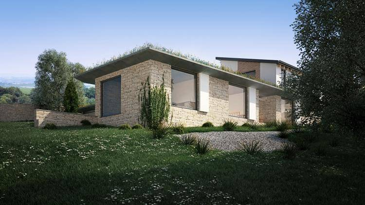
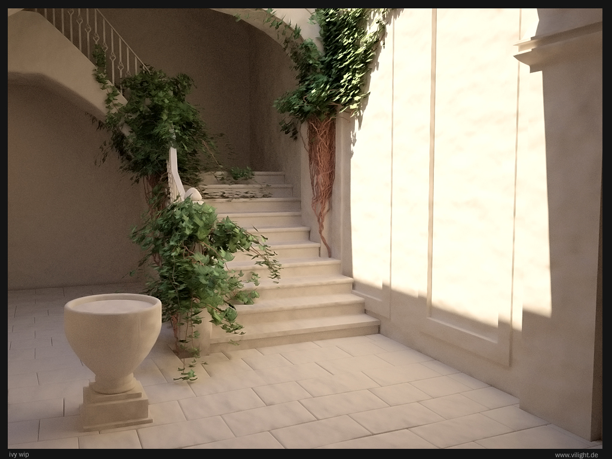
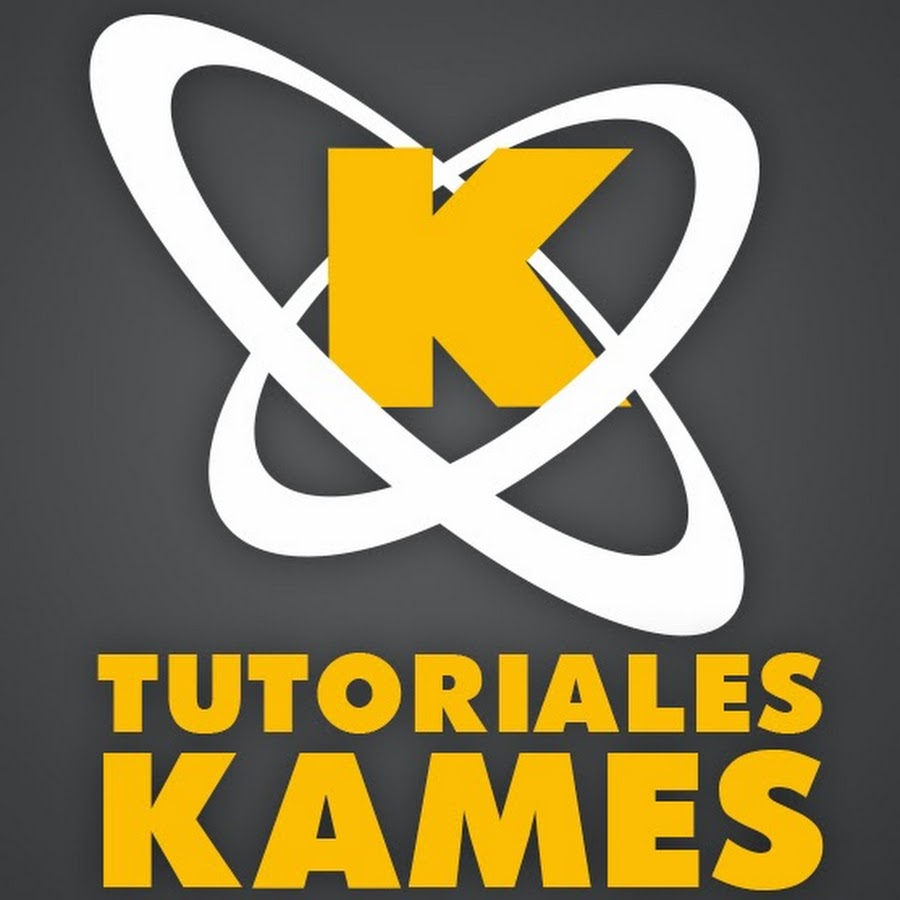
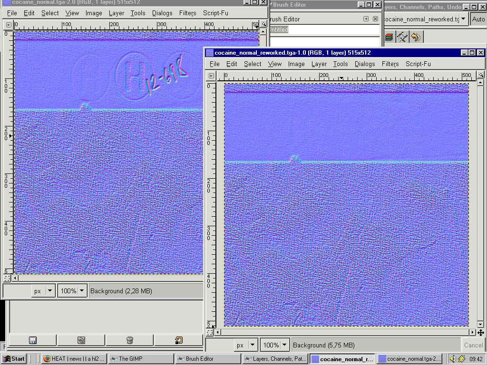

Forest PackPlug-in de 3DSMAX para poblar con vegetación, da acabados muy reales y muy agradables a la vista.
An Ivy GeneratorSoftware que permite agregar enredaderas a cualquier escena "plantando" una semilla.
Da un resultado muy agradable.
Blender GuruCanal de youtube con tutoriales para usar Blender.
Tiene tutoriales MUY útiles y fáciles de entender, si estás queriendo aprender Blender, tiene videos muy buenos para empezar.
CG Cookie BlenderEste canal de youtube tiene videos rápidos con consejos y ejemplos para el modelado y animación en Blender.
Holistic3dEn este canal de youtube nos enseñan muchas cosas de Unity que resultan muy útiles para usrlas en los proyectos.
Nick SaporitoTiene videos con tutoriales bastante útiles para GIMP e Inkscape.
The 3D TutorEn su canal hay tutoriales que ayudan mucho a la hora de modelar en 3DSMAX y otros tutoriales para usar Unreal Engine.
Tutoriales KamesEs un canal muy completo con tutoriales para 3DSMAX, ZBrush, Substance Painter y otros más.
Además que hace reviews de productos y software y lo mejor es que ¡está en español!
Generar Normal MapsUn Plug-in que encontré para hacer normal maps de texturas desde GIMP.